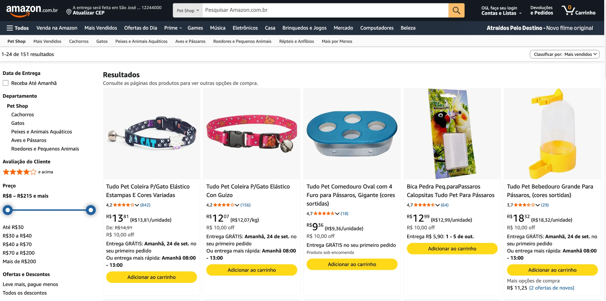
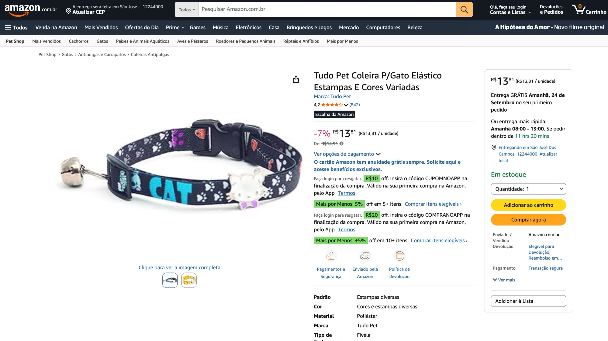
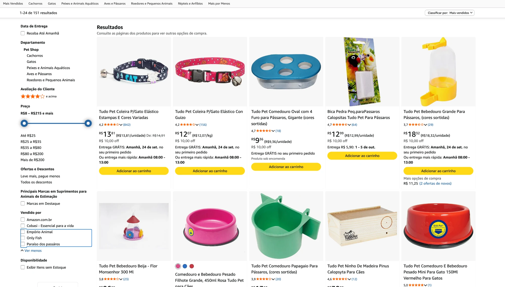
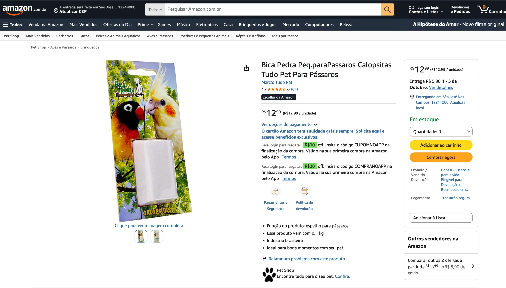
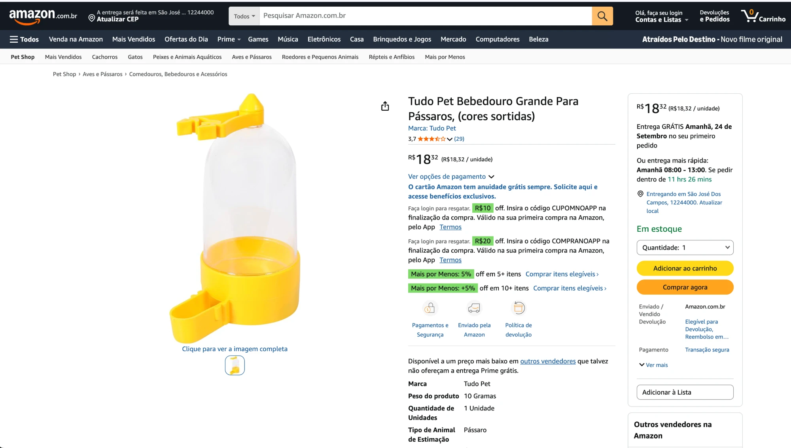
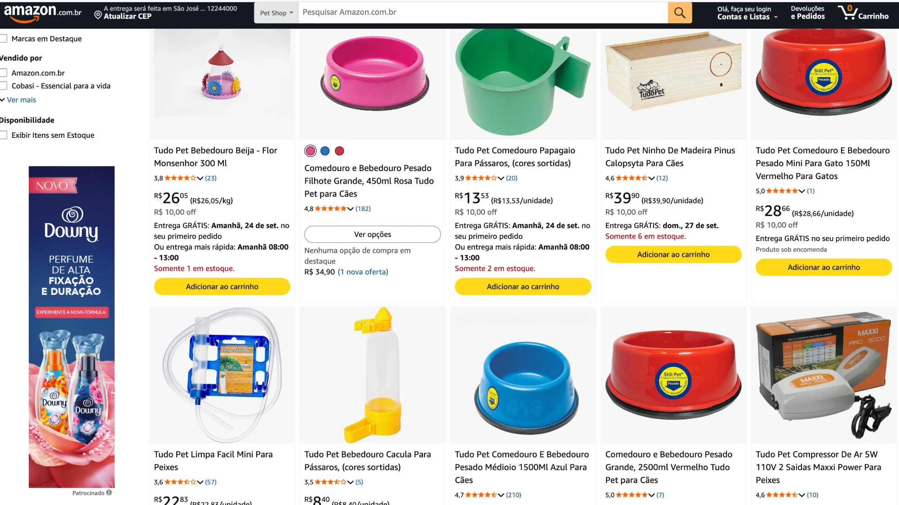
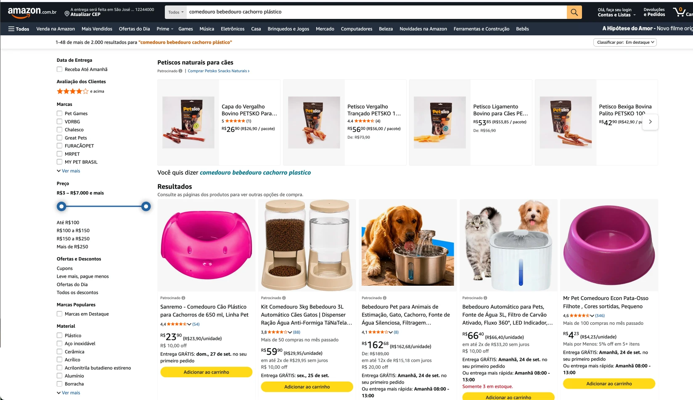
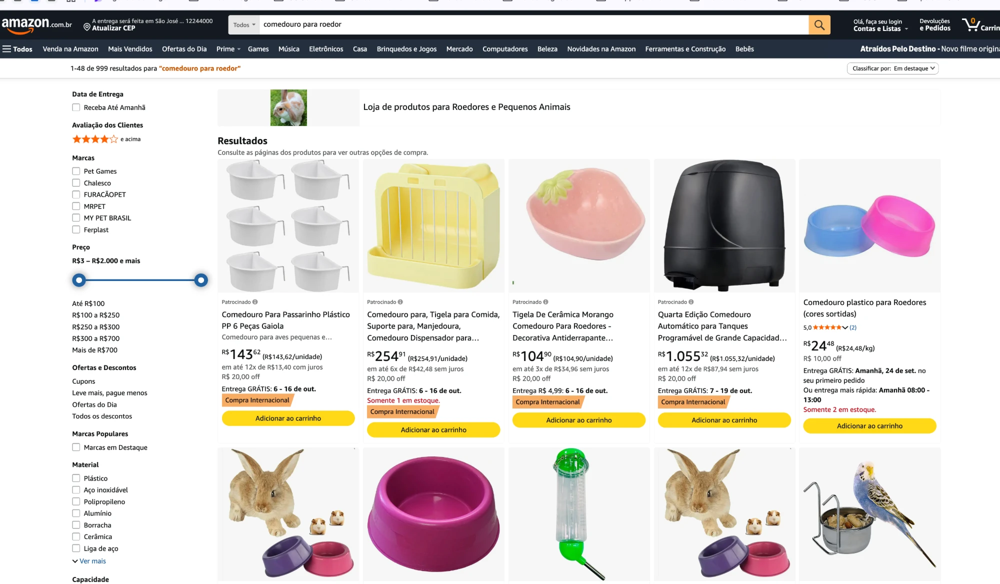
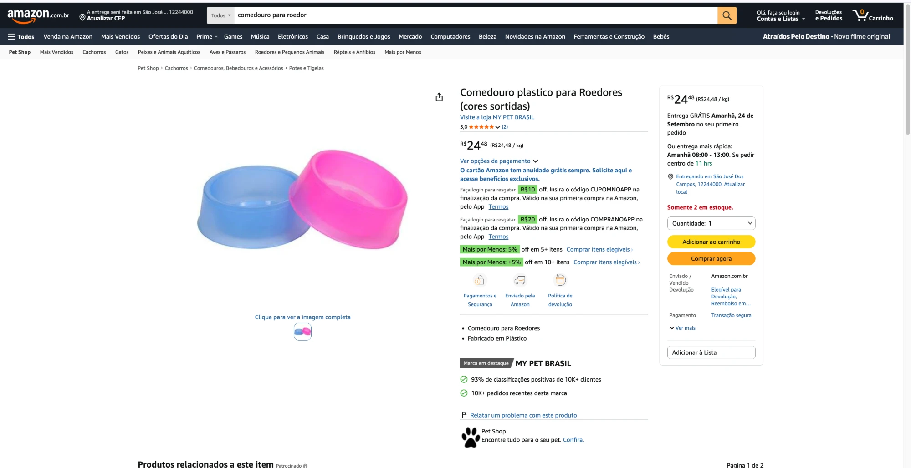

Um levantamento do que está no ar agora, feito antes de qualquer proposta. Cada número desta apresentação tem print, fonte e data.
Nenhum dado interno, nenhum login, nenhuma planilha de vocês. Tudo que está aqui qualquer pessoa consegue ver na Amazon, e vocês podem conferir agora, na frente da gente.
Todo número tem fonte, data e nome de vendedor. Onde não conseguimos confirmar, está escrito que não conseguimos. Nada aqui é estimativa nossa apresentada como fato.
O que não foi verificado também está listado: quantos dos 151 produtos são venda direta da Amazon, a contagem exata de fichas sob cada marca, e o que existe além dos 48 primeiros resultados de cada busca.
O cadastro feito em 2019 continua no ar. São 151 produtos, publicados de uma vez, sem manutenção desde então.
Eles seguiram vendendo sozinhos por sete anos. Isso não é um catálogo abandonado. É um ativo que ninguém administrou.

Avaliação na Amazon só existe depois da compra. Esses números são histórico de venda real, acumulado sem ninguém cuidar.
Dois produtos carregam o selo Escolha da Amazon, que a plataforma concede sozinha ao item que ela recomenda para aquela busca.

Os dois últimos pegaram justamente as duas linhas de nicho da fábrica. Não é bagunça, é organização. A pergunta é de quem.

Se vocês escolheram esses cinco, o trabalho não é selecionar parceiro. É fazer a decisão de vocês aparecer no canal: qual sortimento cada um leva, com que conteúdo, em qual posição de preço.
Hoje nada disso está visível na Amazon. Quem olha a tela não distingue o parceiro escolhido do que chegou por conta própria.
Quatro dos cinco entraram sem passar por vocês. Hoje dois deles são bons parceiros, e isso é sorte, não desenho.
O risco não é o revendedor que está lá. É o próximo. Sem critério de credenciamento, quem chegar amanhã ocupa a mesma vitrine com o mesmo produto, e vocês descobrem depois.
A Bica Pedra tem o selo Escolha da Amazon — a plataforma escolheu esse produto para recomendar.
A buy box é o botão de compra em um clique. Quem está nela concentra a maior parte da venda do produto; as outras ofertas ficam atrás de um link que quase ninguém abre.

O revendedor não está atacando a marca. Ele está fazendo o óbvio com o preço que recebeu.
Quem monta os dois preços de origem é a fábrica: um para a Amazon, outro para a distribuição. A diferença na tela nasce dentro de casa.

O selo Still Pet está gravado no plástico do produto. O campo “Marca” da ficha diz Tudo Pet. Em um terceiro produto, a embalagem traz Quick Pet.
Para o algoritmo da Amazon, três marcas desconhecidas disputando as mesmas buscas. Não uma fábrica com quarenta anos.

Separar as marcas pode fazer todo sentido na distribuição: protege a relação com a rede e evita comparação direta de preço entre canais.
Só que na Amazon o custo dessa separação é específico e mensurável: quarenta anos de fábrica não estão construindo autoridade para nenhuma das três. Cada venda soma reputação para uma marca que o comprador não associa a vocês.
Dá para manter a separação comercial e ainda assim ter uma arquitetura de marca no canal. São decisões diferentes, e hoje estão coladas.
O cadastro de 2019 subiu com a marca que estava na planilha naquele dia. Desde então, cada venda e cada avaliação foram creditadas a ela.
842 avaliações não pertencem à Still Pet. Pertencem a um campo de cadastro que ninguém decidiu preencher assim.
Isso tem conserto, e é um dos poucos itens deste diagnóstico com prazo curto: arquitetura de marca definida, fichas migradas em ondas, reputação preservada.
Quem procura “comedouro bebedouro cachorro plástico” não digita marca nenhuma. É a busca que move volume.
A Amazon destaca sete marcas no filtro dessa categoria. Nenhuma das três de vocês está lá. Uma delas é a My Pet Brasil, distribuidora que revende produtos da fábrica.

Os quatro primeiros resultados de “comedouro para roedor” são produto importado, marca genérica, entrega em três semanas.
Dois deles estão em categoria errada: uma tigela listada em “substratos e areia”, um comedouro de tanque de carpa em “aves e pássaros”. E mesmo assim aparecem antes.

A My Pet Brasil aparece na mesma busca, com marca própria e selo de Marca em destaque da Amazon.
Mesma prateleira. Mesma modalidade de venda. Um construiu marca no canal, o outro não.

Filtros disponíveis nessa categoria:
Campos preenchidos em três produtos:
Vocês fabricam comedouro à prova de formigas. Quem marca esse filtro não vê o produto, porque o campo está vazio.
Pelo que vocês contaram, o caminho parece ser organizar quem já vende. Quero confirmar, porque muda tudo que vem depois.
Vocês também disseram que há produto de fábrica que não vende porque o distribuidor não compra. Esses não pertencem a nenhum dos dois caminhos por enquanto: são uma terceira lista, e ela não queima ninguém, porque a rede já disse não a eles.
Vocês não disputam venda com ninguém. O que muda é quem controla a ficha, o conteúdo, a arquitetura de marca e o critério de credenciamento.
O revendedor ganha uma vitrine melhor do que a que ele montaria sozinho. Vocês ganham um canal que reflete a decisão comercial de vocês.
A impulsio monitora preço e orienta posicionamento. Não impõe preço a revendedor: cada parceiro mantém autonomia comercial.
A marca vai disputar a mesma vitrine da rede que hoje compra dela. Fingir que não vai acontecer é o caminho mais rápido para uma guerra de preço em seis meses.
Isso não exige abrir outro CNPJ. A distribuidora de vocês já vende essa marca, e marketplace é distribuição. O que separa os canais é sortimento, não razão social: CNPJ novo não esconde nada de quem conhece o produto.
Antes de abrir venda direta é preciso definir o que a marca vende e o que fica com a rede. Sem isso, a primeira reclamação chega em semanas.
Não temos acesso ao faturamento de vocês, então não vamos inventar quanto isso custa. O que está abaixo é o que dá para ver na tela, com print e data.
Vocês contaram que um produto chegou a representar entre 60% e 70% da venda de vocês na Amazon, e que depois caiu.
A impulsio não preenche esses campos e não projeta faturamento. A conta é aritmética simples sobre o que vocês informarem.
Isso é o que já aconteceu em um produto. Os outros 150 nunca foram medidos.
Tráfego pago para uma ficha incompleta, com doze ofertas concorrendo na mesma página, vira desconto. Não vira venda.
Isso é posicionamento, não cautela. Mídia entra como proposta separada, depois da primeira onda de fichas publicada e medida.
A impulsio opera dentro das contas de vocês. Os acessos, as lojas e tudo que for construído pertencem à StillPet, inclusive se um dia vocês internalizarem a operação.
Linha de partida medida em 23 de setembro. Toda revisão compara contra ela.
Meta de faturamento. Faturamento depende de preço, estoque e decisão de vocês — três coisas que a operação não controla.
Agência promete crescimento e entrega explicação no terceiro mês. A impulsio responde pelo que dá para auditar na tela.
Também não fazemos, e está escrito no escopo: atendimento ao comprador, devoluções, disputa com plataforma, foto e vídeo de produto. E questão jurídica de marca é do departamento legal de vocês, não nosso.
Três respostas que só vocês têm, e que mudam o desenho do trabalho:
Este diagnóstico foi entregue antes de qualquer contrato, e fica com vocês independentemente do que decidirem. A planilha com as 28 fichas, os 19 erros e os 31 concorrentes medidos acompanha esta apresentação.